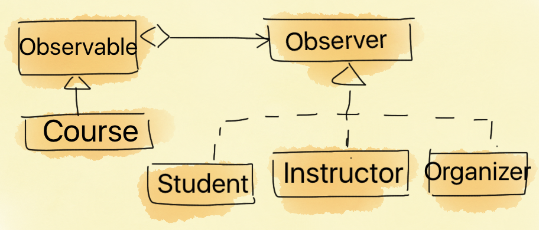
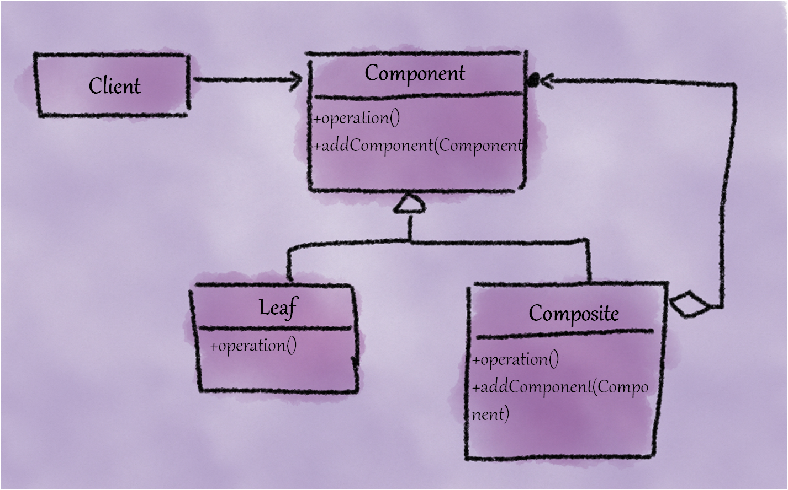
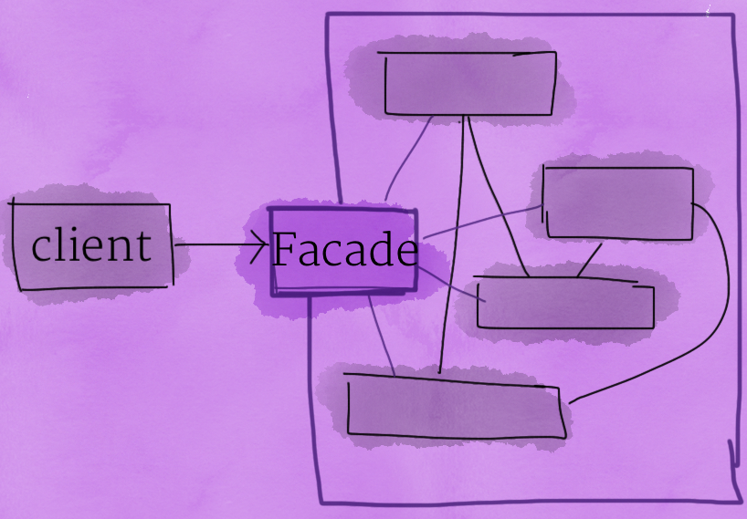
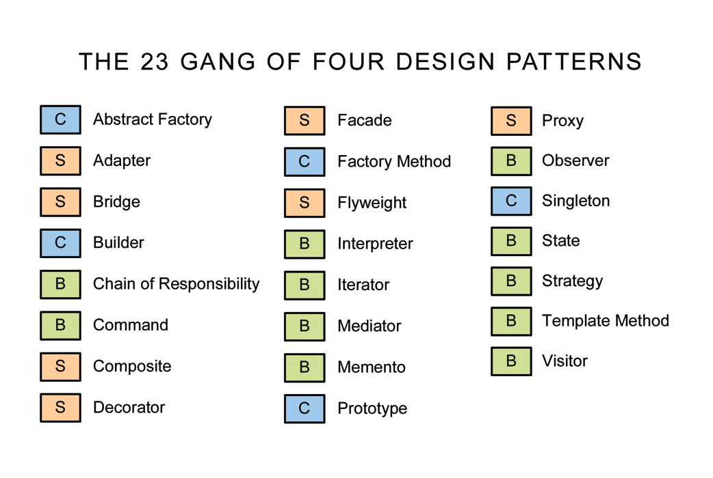

Coding Bootcamp: Introduction to Design Patterns
Who Am I?

Quick Recap - Principles of Object-orientation
- Abstraction
- Encapsulation
- Modularization
- Hierarchy
Design Patterns - A Motivating Example
- Bootcamp course and a few stakeholders (Students and Instructors)
- Any change in the course must be notified to all the stakeholders
- Now, think about its implementation
Design Patterns - A Motivating Example

Implementation
public class Course {
private Student student;
private Instructor instructor;
public Course() {
student = new Student();
instructor = new Instructor();
}
private void updateAll() {
student.update();
instructor.update();
}
public void changeTime() {
//change time
updateAll();
}
}
public class Program {
public static void main(String[] args) {
Course course = new Course();
course.changeTime();
}
}
Implementation - Cont.
- Is it easy to add a new observer (a new Student or a new Instructor)?
- You need to make multiple changes
- What about adding a new category of observers; for example "Organizers"!
Implementation - Take 2
public class Program {
public static void main(String[] args) {
Student student = new Student();
Instructor instructor = new Instructor();
Organizer organizer = new Organizer();
Course course = new Course();
course.addObserver(student);
course.addObserver(organizer);
course.addObserver(instructor);
course.changeTime();
}
}
Implementation - Take 2
public class Course extends Observable{
public void changeTime() {
//change time
setChanged();
notifyObservers();
}
}
public class Student implements Observer{
@Override
public void update(Observable o, Object arg) {
}
}
A Motivating Example
- Now, think again about adding new observers.
- Is it easier?
A Motivating Example
- Yes? WHY?
- In the first implementation, Course class is "tightly-coupled" to Student and Instructor classes. While in the second case, Course class is "loosely-coupled" to it's observers.
- Congratulations!! You have just learned the first design pattern :)
The Implemented Solution

Observer Design Pattern

Observable and Observer

What About .NET
- IObservable interface
- IObserver interface
Let Us Define Design Patterns
- Design patterns are descriptions of communicating objects and classes that are customized to solve a general design problem in a particular context. (By Gang of Four)
- Design patterns are solutions to commonly occurring design problems.
Essential Elements of Patterns
- Name
-
Problem
-
Solution
-
Relationships, roles, and responsibilities
-
Consequences
- Benefits and liabilities
- Tradeoffs
Why to Use Patterns
-
Higher design quality
- Flexibility
- Changeability
- Testability
- ...
- Common vocabulary
Categories of Patterns
- Creational - patterns answer how to create and when to create
- Examples: Factory, Abstract Factory, Builder
- Structural - patterns answer how to comppose/structure
- Examples: Adapter, Composite, Decorator
- Behavioral - patterns describe how a group of objects cooperate to carry out a task
- Examples: Observer, Strategy, Visitor
Factory Pattern
- Motivation
- Creating objects without exposing the instantiation logic to the clients
- Proving a common interface to refer all objects (of a kind)
Factory Pattern

Factory Pattern Example

Factory Pattern
- Benefits
- Separation of concerns - the logic to instantiate is separated
- Flexibility - to extend Product hierarchy without affecting clients
- Liabilities
Let us extend the Factory Pattern
- Motivation
- Let us assume you have families of objects to instantiate
- Widget library providing UI elements such as Button and TextBox
- The library instantiate UI elements based on the platform such as Windows and Linux
Abstract Factory Pattern

Abstract Factory Pattern
- Benefits
- Flexibility (Entire product families can be easily exchanged)
- Separation of concerns (Object lifetime management is separated from object use)
- Liabilities
- GoF Abstract Factory only covers object creation, not object disposal
Strategy Pattern
- Examples - compression algorithm, sort algorithm
Strategy Pattern

Strategy Pattern
- Benefits
- Freedom to chose algorithms
- Easier extensibility
Strategy Pattern
- Applicability
- Many related classes differ only in their behavior
- You need different variants of an algorithm
- A class defines many behaviors, and these appear as multiple conditional statements in its operations
Composite Pattern
Composite Pattern
Motivation
- Need to represent "whole-part" hierarchies with following requirements
- Preserve hierarchical structure
- Same interface for both compound or atomic objects for clients
- It should be easy to extend the hierarchy with new element types
Composite Pattern

Composite Pattern

Composite Pattern
- Benefits
- Transparency (Clients are shielded from the object hierarchy)
- Extensibility (New leafs are easy to add)
Façade Pattern
- Motivation
- Let us assume that we have a component that provide complex multi-steps services
- How to provide a client simplified access to the functionality of such a component
Façade Pattern

Façade Pattern
- Create a façade class that provides a high-level unified interface which contains functions commonly-accessed by the clients
- The client can invoke functions in the façade class which will in turn invoke the specialized functionality in the system
- This makes it very simple for the client to invoke functionality without knowing the innards of the system
- However, the client can always directly access a sub-system for specific services
Façade Pattern
- Benefits
- Provides a simple interface to a complex system
- Decouples the subsystem for clients and other subsystems, thereby promoting subsystem independence and portability
Layers the subsystem
- Use façade to define an entry point to each subsystem level
- If subsystems are dependent, then the dependencies between them can be simplified by making them communicate with each other solely through their facades

References

Exercises
- Write a program to compute following metrics for a C# (or Java) code: LOC (Lines of Code), Number of classes, number of methods. Use regular expressions to achieve the same.
- Provide another way to implement the same functionality but by using string comparison. Pay attension to your design (hint: implement strategy and factory paterns)
- Extend the above program and implement a segregated interface to compute all the supported metrics. Write all the computed metrics to a CSV file. (hint: use Facade pattern)

This work is licensed under a Creative Commons Attribution-NonCommercial-ShareAlike 4.0 International License.